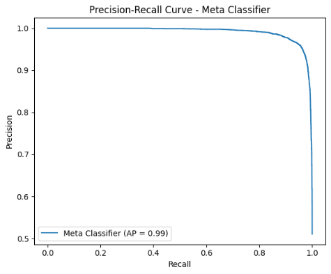
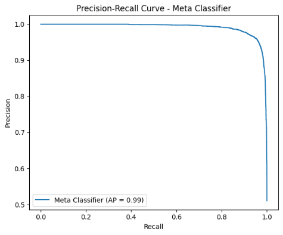
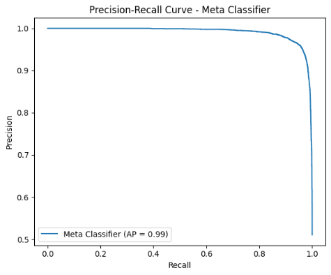

Results
| Model | Accuracy | F1 (Fake) | F1 (Real) |
|---|---|---|---|
| Logistic Regression | 94.87% | 95.00% | 95.00% |
| Random Forest Classifier | 92.42% | 93.00% | 93.00% |
| Meta Classifier | 95.51% | 96.00% | 96.00% |

 

Tyler Katz's Portfolio
In an age of misinformation, I built an NLP-based machine learning pipeline to classify news articles as real or fake with high accuracy. The project uses logistic regression, random forest, and a meta-classifier to combine model outputs and generate robust, confidence-scored predictions. It also features a Streamlit app that allows users to input articles for real-time analysis.
Python 3.11.0
scikit-learn
nltk
pandas
seaborn
wordcloud
swifter
joblib
TF-IDF
Sentiment Analysis (VADER)
Meta Classification
Hyperparameter Tuning (GridSearchCV)
Sourced from Kaggle
The dataset includes 72,134 labled articles (real/fake) aggregated by a team of researchers from mutliple sources including Reuters and BuzzFeed.
| Model | Accuracy | F1 (Fake) | F1 (Real) |
|---|---|---|---|
| Logistic Regression | 94.87% | 95.00% | 95.00% |
| Random Forest Classifier | 92.42% | 93.00% | 93.00% |
| Meta Classifier | 95.51% | 96.00% | 96.00% |

Try out the Streamlit app for this project here!